{kind=link}
![[Demo image of RE_Box_left() and RE_Box_right()]](roundedge_18.jpg) A box with the four corners on the −x side and the eight adjacent edges rounded.
A box with the four corners on the −x side and the eight adjacent edges rounded.
A library module from the Persistence of Vision Raytracer (POV-Ray) Object Collection.
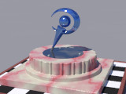 Perfectly sharp edges are rare in real life. Blunting or rounding-off the edges of ray traced objects brings out specular highlights and other, more subtle lighting effects that can make the difference between “That’s a nice ray-traced scene,” and “Wow!”
Unfortunately, with CSG this task is tedious and time-consuming. The standard include file shapes.inc has some helpful macros to assist with this task, but they are rather limited. RoundEdge builds upon shapes.inc and adds some additional objects and functions.
| Key Files | |
|---|---|
| File | Description |
roundedge.html |
The user manual (this document) |
roundedge.inc |
The RoundEdge library |
roundedge.pov |
A demonstration scene description file, which was used to render the sample illustrations in this manual |
roundedge.jpg |
Sample output images |
roundedge_thumbnail.jpg |
|
roundedge_nn.jpg |
Illustrations of the various features, where the italicized nn represents a 2-digit number (36 images) |
| Administrative Files | |
| File | Description |
READMEnnnnnn.html |
Important information about using the POV-Ray Object Collection |
roundedge_description.txt |
A brief description of RoundEdge |
roundedge_keywords.txt |
A list of keywords |
roundedge_prereqs.txt |
Prerequisites (empty file) |
roundedge.css |
Other administrative files |
cc-LGPL-a.png |
|
Versionnnnnnn.js |
|
The italicized nnnnnn in some of the file names represents the 6-digit number that is in the name of the .zip file. If you downloaded this module from a repository other than lib.povray.org, the files cc-LGPL-a.png, READMEnnnnnn.html, and Versionnnnnnn.js may not be present. Please see the Object Collection User’s Guide if the README file is not present.
Note: The file roundedge_cc-lgpl.png is no longer used.
RoundEdge requires POV-Ray version 3.5 or later.
All file names in this module and all global and local identifiers defined in roundedge.inc comply fully with the Object Collection naming standards, as revised August 2008 and proposed August 2012. The files in this module may be safely stored in the same folder as other fully compliant Object Collection modules.
The reserved prefixes for this module are “roundedge” and “RE,” including any uppercase and lowercase variants. To avoid conflicts, do not introduce into your scene description file any identifiers with either of these prefixes as names, or any identifiers that start with either of these prefixes plus an underscore.
The standard include files functions.inc, math.inc, shapes.inc, and transforms.inc are used by roundedge.inc. The identifier View_POV_Include_Stack from the standard include file debug.inc is referenced by roundedge.inc, although debug.inc itself is not used.
Include this file once prior to using any of the features of RoundEdge:
#include "roundedge.inc"
Including the file more than once is harmless, though unnecessary.
The descriptions of the objects assume valid arguments. If the arguments are not valid (for example, a negative radius), then the shape is undefined; that is, with no guarantee of what it will look like or that it will fit anywhere. To assist the user, a warning or error message will be issued.
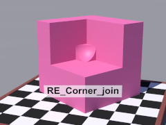
An instant blob for the point of intersection of three orthogonal planes. It can be used to patch the Y-shaped seams left by the straight join macros. The joint is at the origin, and the curve faces the positive x-y-z octant. (In the illustration, the RE_Corner_join() object has been rotated to match the corner.) To avoid potential coincident surfaces, the object overlaps the origin and the three planes.
| Formal Parameter | Type | Description |
|---|---|---|
rBlob |
float | The radius of the blob curve. |
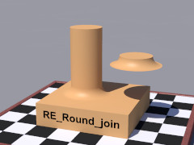 An instant blob for a vertical cylindrical post joined to a horizontal plane. The intersection of the post’s axis with the plane is at the origin. To avoid potential coincident surfaces, the bottom surface of the join is slightly below the origin.
| Formal Parameter | Type | Description |
|---|---|---|
RPost |
float | The radius of the post. |
rBlob |
float | The radius of the blob curve. |
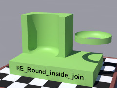 An instant blob for a vertical hollow cylinder joined to a horizontal plane. The intersection of the cylinder’s axis with the plane is at the origin. To avoid potential coincident surfaces, the join slightly overlaps the hollow cylinder, and bottom surface of the join is slightly below the origin.
| Formal Parameter | Type | Description |
|---|---|---|
RHollow |
float | The radius of the hollow space. |
rBlob |
float | The radius of the blob curve. |
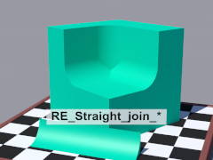 An instant blob for the join between a y-normal plane and a z-normal plane. To avoid potential coincident surfaces, the object overlaps the line of intersection.
These arguments may seem odd, but they were chosen to minimize typing and mental effort.
| Formal Parameter | Type | Description |
|---|---|---|
pv_Start |
point vector | One endpoint of the intersection. |
End_x |
float | The scalar x value of the other endpoint. |
rBlob |
float | The radius of the blob curve. |
Dir |
float | Rotation about the line of intersection, in degrees. |
An instant blob for the join between an x-normal plane and a z-normal plane. To avoid potential coincident surfaces, the object overlaps the line of intersection.
These arguments may seem odd, but they were chosen to minimize typing and mental effort.
| Formal Parameter | Type | Description |
|---|---|---|
pv_Start |
point vector | One endpoint of the intersection. |
End_y |
float | The scalar y value of the other endpoint. |
rBlob |
float | The radius of the blob curve. |
Dir |
float | Rotation about the line of intersection, in degrees. |
An instant blob for the join between an x-normal plane and a y-normal plane. To avoid potential coincident surfaces, the object overlaps the line of intersection.
These arguments may seem odd, but they were chosen to minimize typing and mental effort.
| Formal Parameter | Type | Description |
|---|---|---|
pv_Start |
point vector | One endpoint of the intersection. |
End_z |
float | The scalar z value of the other endpoint. |
rBlob |
float | The radius of the blob curve. |
Dir |
float | Rotation about the line of intersection, in degrees. |
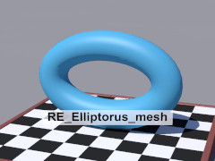 A toroid mesh that can serve as a rounded edge for scaled cylinders, when it is desired that the edge radius not be scaled with the cylinders. The central curve, the extreme inner curve, and the extreme outer curve are all ellipses (within the resolution of the mesh). Note that a sphere sweep does not satisfy this condition (except for the boundary cases where the ellipses are circles), as the required shape does not have a constant minor radius.
The toroid is oriented horizontally. (In the illustration, it has been rotated 90° about the x-axis for better viewing.) The mesh is closed, and can therefore be used in CSG differences and intersections.
| Formal Parameter | Type | Description |
|---|---|---|
RxMajor |
float | The major radius in the x-direction. |
RzMajor |
float | The major radius in the z-direction. |
rMinor |
float | The nominal minor radius. |
ThetaRes |
float | The number of longitudinal mesh divisions, which must be at least 4. |
PhiRes |
float | The number of latitudinal mesh divisions, which must be at least 4. |
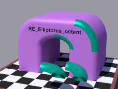 The +x, +y, +z octant of a horizontally oriented elliptical toroid, implemented as a mesh. The object is intended to serve as a rounded edge for scaled cylinders, when it is desired that the edge radius not be scaled with the cylinders. The central curve, the extreme inner curve, and the extreme outer curve are all elliptical arcs (within the resolution of the mesh). Note that a sphere sweep does not satisfy this condition (except for the boundary cases where the arcs are circular), as the required shape does not have a constant minor radius.
The mesh is closed, and can therefore be used in CSG differences and intersections. The “flat” surfaces are bowed outward slightly to avoid potential coincident surfaces. (There are still intermittent artifacts resembling coincident surfaces, but I haven’t yet identified the cause.)
| Formal Parameter | Type | Description |
|---|---|---|
RxMajor |
float | The major radius in the x-direction. |
RzMajor |
float | The major radius in the z-direction. |
rMinor |
float | The nominal minor radius. |
ThetaRes |
float | The number of longitudinal mesh divisions, which must be at least 1. |
PhiRes |
float | The number of latitudinal mesh divisions, which must be at least 2. Use an even number for best results. |
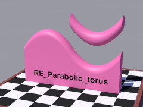
A circle of radius R parallel to the y-z plane, swept along the parabola y = Hx2 | z = 0.
The user is responsible for clipping and bounding. The objects are prone to floating point error, so an isosurface function, RE_fn_Parabolic_torus(), is also provided.
| Formal Parameter | Type | Description |
|---|---|---|
H |
float | The amplitude of the parabola. |
R |
float | The minor radius. |
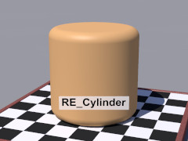
A replacement for macro Round_Cylinder() with several enhancements:
RE_Cylinder(), this generally results in faster renders. (This feature can be disabled by setting RE_Split_union to on.)
Round_Cylinder_Merge() has artifacts for large, but valid, values of EdgeRadius. For example:
#include "shapes.inc"
object
{ Round_Cylinder_Merge (-y, y, 1, 0.7)
pigment { red 1 transmit 0.5 }
}
These artifacts are eliminated in RE_Cylinder() and in RE_Cylinder_end(), below.
If the endpoints of the central axis are equal, a parse error will result.
| Formal Parameter | Type | Description |
|---|---|---|
A, B |
point vector | The endpoints of the central axis. If either argument is scalar, it will be promoted to a vector. |
ROuter |
float | The radius of the cylinder. |
rEdge |
float | The radius of the edges of the cylinder. |
Use_merge |
float/Boolean | Whether or not to use a CSG merge. In general, pass yes if the object is to be transparent, no otherwise. |
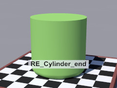
A cylinder that is rounded on one end. The resulting object will fit snugly within cylinder { A, B, ROuter }.
If A and B are equal, a parse error will result.
| Formal Parameter | Type | Description |
|---|---|---|
A |
point vector | The endpoint of the central axis at the rounded end of the cylinder. If scalar, it will be promoted to a vector. |
B |
point vector | The endpoint of the central axis at the flat end of the cylinder. If scalar, it will be promoted to a vector. |
ROuter |
float | The radius of the cylinder. |
rEdge |
float | The radius of the rounded edge. |
Use_merge |
float/Boolean | Whether or not to use a CSG merge. In general, pass yes if the object is to be transparent, no otherwise. |
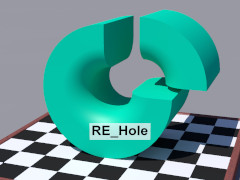
A cylinder with a hole along the central axis.
The edges of the hole are rounded.
The resulting object will fit snugly within
cylinder { A, B, ROuter } and snugly around
cylinder { A, B, RInner }.
If A and B are equal, a parse error will result.
| Formal Parameter | Type | Description |
|---|---|---|
A, B |
point vector | The endpoints of the central axis. If either argument is scalar, it will be promoted to a vector. |
ROuter |
float | The radius of the cylinder. |
RInner |
float | The inner radius of the hole. |
rEdge |
float | The radius of the rounded edges. |
Use_merge |
float/Boolean | Whether or not to use a CSG merge. In general, pass yes if the object is to be transparent, no otherwise. |
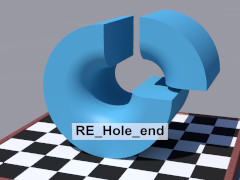
A cylinder with a hole along the central axis.
The edge of the hole at one end is rounded.
The resulting object will fit snugly within
cylinder { A, B, ROuter } and snugly around
cylinder { A, B, RInner }.
If A and B are equal, a parse error will result.
| Formal Parameter | Type | Description |
|---|---|---|
A |
point vector | The endpoint of the central axis at the rounded opening. If scalar, it will be promoted to a vector. |
B |
point vector | The endpoint of the central axis at the sharp-rimmed opening. If scalar, it will be promoted to a vector. |
ROuter |
float | The radius of the cylinder. |
RInner |
float | The inner radius of the hole. |
rEdge |
float | The radius of the rounded edge. |
Use_merge |
float/Boolean | Whether or not to use a CSG merge. In general, pass yes if the object is to be transparent, no otherwise. |
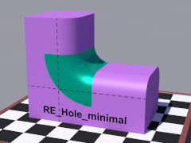
A cylinder with a hole along the central axis.
The edges of the hole are rounded, and the cylinder is just wide enough to cover the joint between perpendicular rounded boxes of the same edge radius.
The object will fit snugly around
cylinder { A, B, RInner }.
If A and B are equal, a parse error will result.
Note: the illustration shows only one quadrant of the RE_Hole_minimal() object.
| Formal Parameter | Type | Description |
|---|---|---|
A, B |
point vector | The endpoints of the central axis. If either argument is scalar, it will be promoted to a vector. |
RInner |
float | The inner radius of the hole. |
rEdge |
float | The radius of the rounded edges. |
Use_merge |
float/Boolean | Whether or not to use a CSG merge. In general, pass yes if the object is to be transparent, no otherwise. |
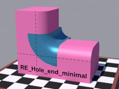
A cylinder with a hole along the central axis.
One edge of the hole is rounded, and the cylinder is just wide enough to cover the joint between perpendicular rounded boxes of the same edge radius.
The object will fit snugly around
cylinder { A, B, RInner }.
If A and B are equal, a parse error will result.
Note: the illustration shows only one quadrant of the RE_Hole_end_minimal() object.
| Formal Parameter | Type | Description |
|---|---|---|
A |
point vector | The endpoint of the central axis at the rounded opening. If scalar, it will be promoted to a vector. |
B |
point vector | The endpoint of the central axis at the sharp-rimmed opening. If scalar, it will be promoted to a vector. |
RInner |
float | The inner radius of the hole. |
rEdge |
float | The radius of the rounded edge. |
Use_merge |
float/Boolean | Whether or not to use a CSG merge. In general, pass yes if the object is to be transparent, no otherwise. |
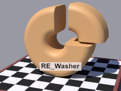
A cylinder with a hole along the central axis.
The edges of the cylinder and the hole are rounded.
The resulting object will fit snugly within
cylinder { A, B, ROuter } and snugly around
cylinder { A, B, RInner }.
If A and B are equal, a parse error will result.
| Formal Parameter | Type | Description |
|---|---|---|
A, B |
point vector | The endpoints of the central axis. If either argument is scalar, it will be promoted to a vector. |
ROuter |
float | The outer radius of the cylinder. |
RInner |
float | The inner radius of the hole. |
rEdge |
float | The radius of the rounded edges. |
Use_merge |
float/Boolean | Whether or not to use a CSG merge. In general, pass yes if the object is to be transparent, no otherwise. |
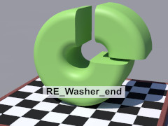
A cylinder with a hole along the central axis.
The edges on one side of the cylinder and the hole are rounded.
The resulting object will fit snugly within
cylinder { A, B, ROuter } and snugly around
cylinder { A, B, RInner }.
If A and B are equal, a parse error will result.
| Formal Parameter | Type | Description |
|---|---|---|
A |
point vector | The endpoint of the central axis at the rounded side of the object. If scalar, it will be promoted to a vector. |
B |
point vector | The endpoint of the central axis at the flat side of the object. If scalar, it will be promoted to a vector. |
ROuter |
float | The outer radius of the cylinder. |
RInner |
float | The inner radius of the hole. |
rEdge |
float | The radius of the rounded edges. |
Use_merge |
float/Boolean | Whether or not to use a CSG merge. In general, pass yes if the object is to be transparent, no otherwise. |
The first macro creates a box with all its edges rounded off. The remaining macros create boxes with only some rounded edges. The intent of the partially rounded box macros is to reduce object counts in situations where rounding all edges is unnecessary. This can result in significantly faster renders when differences, intersections, or photons are used, in addition to reducing the need for differences and intersections.
Despite the large number of macros in this section, there are only four basic shapes: the fully rounded box; and three partially rounded boxes that are pre-rotated into various orientations by the macros.
All of these rounded box macros take the same set of arguments:
| Formal Parameter | Type | Description |
|---|---|---|
A, B |
point vector | Opposite points of the box. If either argument is scalar, it will be promoted to a vector. |
rEdge |
float | The radius of the edges of the box. |
Use_merge |
float/Boolean | Whether or not to use a CSG merge. In general, pass yes if the object is to be transparent, no otherwise. |
The resulting object will fit snugly within box { A, B }.
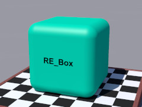
A wrapper for macro Round_Box() with two enhancements:
Round_Box_Union(), this generally results in faster renders. (This feature can be disabled by setting RE_Split_union to on.)
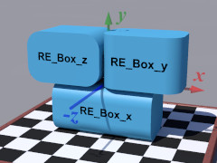 A box with the four edges in the x-direction rounded, like a can of sardines on its side. A box of zero width will cause a parse error.
A box with the four edges in the y-direction rounded, like a can of sardines. A box of zero height will cause a parse error.
A box with the four edges in the z-direction rounded, like a can of sardines on its side. A box of zero depth will cause a parse error.
A box with the four corners on the −x side and the eight adjacent edges rounded.
A box with the four corners on the +x side and the eight adjacent edges rounded.
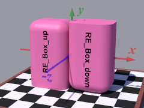 A box with the four corners on the +y side and the eight adjacent edges rounded.
A box with the four corners on the −y side and the eight adjacent edges rounded.
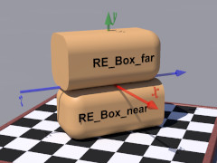 A box with the four corners on the −z side and the eight adjacent edges rounded.
A box with the four corners on the +z side and the eight adjacent edges rounded.
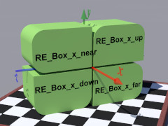 A box with the two top edges in the x-direction rounded. A box of zero width will cause a parse error.
A box with the two bottom edges in the x-direction rounded. A box of zero width will cause a parse error.
A box with the two edges in the x-direction on the −z side rounded. A box of zero width will cause a parse error.
A box with the two edges in the x-direction on the +z side rounded. A box of zero width will cause a parse error.
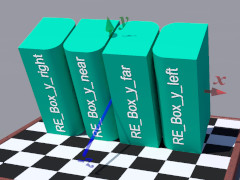 A box with the two edges in the y-direction on the −x side rounded. A box of zero height will cause a parse error.
A box with the two edges in the y-direction on the +x side rounded. A box of zero height will cause a parse error.
A box with the two edges in the y-direction on the −z side rounded. A box of zero height will cause a parse error.
A box with the two edges in the y-direction on the +z side rounded. A box of zero height will cause a parse error.
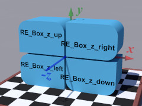 A box with the two top edges in the z-direction rounded. A box of zero depth will cause a parse error.
A box with the two bottom edges in the z-direction rounded. A box of zero depth will cause a parse error.
A box with the two edges in the z-direction on the −x side rounded. A box of zero depth will cause a parse error.
A box with the two edges in the z-direction on the +x side rounded. A box of zero depth will cause a parse error.
The macros in this section define boxes for which the radius of the edges of two opposite faces (the ends) differs from the radius of the other edges (the sides). Examples might be a dead bolt or a wooden beam.
Partially rounded boxes are defined in order to reduce object counts, which can result in significantly faster renders when differences, intersections, or photons are used. The partially rounded boxes also reduce the need for differences and intersections.
The first five arguments are the same for all of the unequal edge box macros:
| Formal Parameter | Type | Description |
|---|---|---|
A, B |
point vector | Opposite points of the box. If either argument is scalar, it will be promoted to a vector. |
rSide |
float | The radius of the side edges of the box. |
rEnd |
float | The radius of the end edges of the box, which must be no larger than rSide. |
Use_merge |
float/Boolean | Whether or not to use a CSG merge. In general, pass yes if the object is to be transparent, no otherwise. |
The resulting object will fit snugly within box { A, B }.
Note: some degenerate shapes (those with edge radii so large that flat surfaces have been eliminated) will generate a warning that there should be at least 2 objects in CSG.
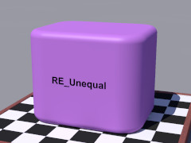A box with all corners and edges rounded.
| Formal Parameter | Type | Description |
|---|---|---|
v_Orientation |
3-D vector | The axis perpendicular to the end faces. For example, if the top and bottom faces are the ends, then pass y as the v_Orientation argument.
This vector must have one and only one nonzero component, or a parse error will result. |
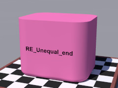 A box with the edges and corners of one end face completely rounded. The 4 side edges are also rounded.
| Formal Parameter | Type | Description |
|---|---|---|
v_End |
3-D vector | The direction of the rounded end face. For example, if the rounded end face is at the bottom, then pass -y as the v_End argument.
This vector must have one and only one nonzero component, or a parse error will result. |
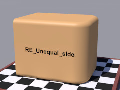 A box with the edges and corners of one side face completely rounded. The 4 edges perpendicular to this face are also rounded.
| Formal Parameter | Type | Description |
|---|---|---|
v_Orientation |
3-D vector | The axis perpendicular to the end faces. For example, if the top and bottom faces are the ends, then pass y as the v_Orientation argument.
This vector must have one and only one nonzero component, or a parse error will result. |
v_Side |
3-D vector | The direction to the rounded side face. For example, if the rounded side is the right face, then pass x as the v_Side argument.
This vector must have one and only one nonzero component, and orthogonal to |
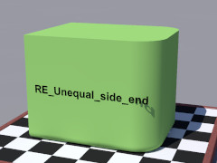 A box with one end face and one side face each rounded on 3 edges, and on the 2 corners they share.
| Formal Parameter | Type | Description |
|---|---|---|
v_End |
3-D vector | The direction of the end face with rounded edges. For example, if this face is at the bottom, then pass -y as the v_End argument.
This vector must have one and only one nonzero component, or a parse error will result. |
v_Side |
3-D vector | The direction to the rounded side face. For example, if the rounded side is the right face, then pass x as the v_Side argument.
This vector must have one and only one nonzero component, which is orthogonal to |
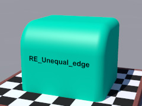 A box with one side edge rounded. The 2 corners at the ends of this edge and the 4 end edges that meet there, 2 at each corner, are also rounded.
| Formal Parameter | Type | Description |
|---|---|---|
v_Orientation |
3-D vector | The axis perpendicular to the end faces. For example, if the left and right faces are the ends, then pass x as the v_Orientation argument.
This vector must have one and only one nonzero component, or a parse error will result. |
v_Edge |
3-D vector | The direction to the rounded side edge. For example, if the rounded edge is the upper near edge, then pass y-z as the v_Edge argument.
This vector must have exactly 2 nonzero coordinates, both orthogonal to |
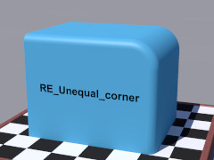 A box with one corner completely rounded. The 3 edges that meet at this corner are also rounded.
| Formal Parameter | Type | Description |
|---|---|---|
v_End |
3-D vector | The direction of the end face with the rounded corner. For example, if the near face is one of the end faces and has the rounded corner, then pass -z as the v_End argument.
This vector must have one and only one nonzero component, or a parse error will result. |
v_Corner |
3-D vector | The octant with the rounded corner. For example, if the rounded corner is the upper right near corner, then pass x+y-z as the v_Corner argument.
This vector must have 3 nonzero coordinates, and the coordinate corresponding to |
Implements the isosurface evaluate feature, automatically calculating its arguments in the manner suggested in the POV-Ray Reference Manual. This is a general isosurface macro, useful not only for blobs and rounded edges, but for all sorts of isosurfaces.
N.B.: evaluate does not perform well in POV-Ray 3.7, due to multi-threading issues.
| Formal Parameter | Type | Description |
|---|---|---|
Max_gradient |
float | The maximum gradient of the function, which can be obtained by testing the isosurface without evaluate. |
Min_factor |
float | A factor by which to reduce the maximum gradient. This argument may require experimentation, but 0.6 is a good starting point. |
Attenuation |
float | An attenuation parameter of 1 or less. This argument may require experimentation, but 0.7 is a good starting point. |
For all of these functions, the default threshold (0.0) and default polarity (off, or negative) are assumed.
Note: In order to avoid a POV-Ray namespace scope feature, all the function arguments (other than x, y, and z) in roundedge.inc begin with “RE_P” followed by a digit and an underscore. In this user manual, this prefix is omitted for clarity.
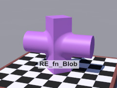
An isosurface blobbing function. This function is based on the formula for the blob primitive, so when it’s used with f_sphere(), it gives results identical to the blob primitive (within the limits of the accuracy of the isosurface).
| Formal Parameter | Type | Description |
|---|---|---|
Value |
float | The unblobbed function value f (x, y, z, …) |
Blob |
float | “Blobbiness.” Depending on the function, this is typically:
|
Subtract RE_fn_Blob() of all base functions from 1. For example:
isosurface
{ function
{ 1 - RE_fn_Blob (abs(x) + abs(z) - 1, 0.3)
- RE_fn_Blob (f_sphere (0, y, z, 0.8), 0.2)
}
max_gradient 4 / 0.2
contained_by { box { -<2.5, 2, 1>, <2.5, 2, 1> } }
}
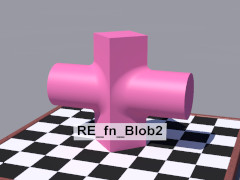 Another isosurface blobbing function. This function uses an alternate formula that gives smoother curves for some joins than the standard blob formula. With this formula, perpendicular planes yield a blob with a circular cross section, making it useful in conjunction with the cylinder, sphere, and torus primitives.
| Formal Parameter | Type | Description |
|---|---|---|
Value |
float | The unblobbed function value f (x, y, z, …) |
Blob |
float | “Blobbiness.” Depending on the function, this is typically:
|
RE_fn_Blob2() of all base functions.
RE_fn_Blob2() always returns a non-negative number, so it is not necessary to check for a negative square root operand unless you are using a negative blob component.
Warning: It has come to my attention that a negative square root operand, in the context of an isosurface, does not raise an exception. If you use a negative blob component without checking that the sum of the components is non-negative, the isosurface can fail silently, without halting the render.
Example:
isosurface
{ function
{ 1 - sqrt
( RE_fn_Blob2 (abs(x) + abs(z) - 1, 0.3)
+ RE_fn_Blob2 (f_sphere (0, y, z, 0.8), 0.2)
)
}
max_gradient 1.3 / 0.2
contained_by { box { -<2.5, 2, 1>, <2.5, 2, 1> } }
}
Note: the max gradient will typically be inversely proportional to the smallest Blob argument.
blob primitive?
isosurface.
RE_fn_Blob() or RE_fn_Blob2() instead of the isosurface blobbing methods suggested in the POV-Ray documentation?
RE_fn_Blob() and RE_fn_Blob2() match the curves of POV-Ray primitives, allowing primitive and isosurface blob to work together. The primitives can then model the bulk of the object, leaving only the blobbed portions to be modeled with the isosurface. This results in dramatically shorter rendering times.
The illustrations for RE_fn_Hole() and RE_fn_Wheel() demonstrate seamless joins between RE_fn_Blob2() blobs and RE_Straight_join_x().
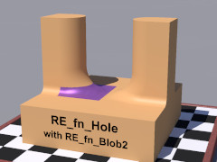
A slab with a rounded-edged hole punched through it, equivalent to
RE_Hole (-rMinor*y, rMinor*y, ∞, RMajor - rMinor, rMinor, 1).
Its utility is with isosurface blobs. In the illustration, the colored patch is an isosurface of RE_fn_Hole() blobbed using RE_fn_Blob2().
| Formal Parameter | Type | Description |
|---|---|---|
RMajor |
float | The radius of the hole. |
rMinor |
float | The minor radius of the rounded edge. |
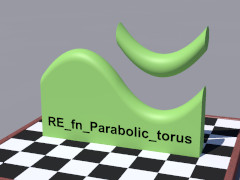
A circle of radius R parallel to the y-z plane, swept along the parabola y = Hx2 | z = 0. Slower, but better behaved than macro RE_Parabolic_torus(). Check the message window to determine max_gradient.
| Formal Parameter | Type | Description |
|---|---|---|
H |
float | The amplitude of the parabola. |
R |
float | The minor radius of the rounded edge. |
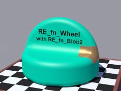
A merge of a torus and a cylinder, equivalent to
RE_Cylinder (-rMinor*y, rMinor*y, RMajor + rMinor, rMinor, 1).
Its utility is with isosurface blobs. In the illustration, the colored patch is an isosurface of RE_fn_Wheel() blobbed using RE_fn_Blob2().
| Formal Parameter | Type | Description |
|---|---|---|
RMajor |
float | The major radius of the torus. |
rMinor |
float | The minor radius of the rounded edge. |
POV-Ray 3.7 fails to issue max_gradient warnings on declared isosurfaces. The following code will not generate any warnings, regardless of the specified max_gradient and maximum gradient found:
#declare MyObject = isosurface { ... }
object { MyObject }
To establish and verify a max_gradient in POV-Ray 3.7, you must use the isosurface directly:
isosurface { ... }
After the maximum gradient is established during testing, you may rewrite your scene with a declared isosurface.
This bug is fixed in POV-Ray 3.8.
Note: In order to avoid a POV-Ray namespace scope feature, all the function arguments in roundedge.inc begin with “RE_P” followed by a digit and an underscore. In this user manual, this prefix is omitted for clarity.
Note: Functions RE_fn_Blob_surface_radius() and RE_fn_Blob_field_radius() were originally called RE_fn_Blob_distance() and RE_fn_Blob_radius(), respectively. The old names reflect the terminology in the POV-Ray Reference Manual, but I feel the new names are more intuitive and easier to recall. The old function names still work.
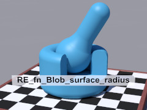 Returns the surface radius of a blob component, given the field radius and field strength. The default blob threshold of 1.0 is assumed. Use this function when the exact size of a blob component needs to be known. In the illustration, the size of the opening is matched to the blob.
| Formal Parameter | Type | Description |
|---|---|---|
RField |
float | The field radius of the component. |
Strength |
float | The field strength of the component. |
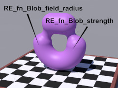 Returns the field radius that yields a blob component of the desired surface radius. The default blob threshold of 1.0 is assumed. Use this function when the exact size of a blob component is important. In the illustration, the blob is matched seamlessly to the half-torus.
| Formal Parameter | Type | Description |
|---|---|---|
RSurface |
float | The desired surface radius of the component. |
Strength |
float | The field strength of the component. |
Returns the field strength that yields a blob component of the desired surface radius. The default blob threshold of 1.0 is assumed. Use this function when the exact size of a blob component is important. In the illustration above, the blob is matched seamlessly to the half-torus.
| Formal Parameter | Type | Description |
|---|---|---|
RSurface |
float | The desired surface radius of the component. |
RField |
float | The field radius of the component. |
| Identifier | Type | Description | Default |
|---|---|---|---|
RE_ABIT |
float | Slightly greater than zero, for avoiding coincident surfaces. | 0.001 |
RE_Debug |
float/Boolean | If on, then some information will be written to the debug stream. Currently, only RE_Evaluate() calculations are written. |
off |
RE_LESS |
float | Slightly less than one, for avoiding coincident surfaces. | 0.999 |
RE_MORE |
float | Slightly greater than one, for avoiding coincident surfaces. | 1.001 |
RE_Split_union |
float/Boolean | If off, then split_union off will be applied to the various rounded box and rounded cylinder unions. This can result in faster rendering when photons are used. If on, no action will be taken. |
off |
If the user finds the default values unsatisfactory, these parameters may be modified at any time prior to using a macro.
| Identifier | Type | Description | Value |
|---|---|---|---|
RE_ATTENUATION |
float | A suggested value for RE_Evaluate()’s Attenuation argument. |
0.7 |
RE_MIN_FACTOR |
float | A suggested value for RE_Evaluate()’s Min_factor argument. |
0.6 |
ROUNDEDGE_VERSION |
float | The RoundEdge version, in case the scene file needs that information. | 2.0 |
These names are retained from previous versions of RoundEdge.
| Old Identifier Name | Type | New Name |
|---|---|---|
RE_fn_Blob_distance |
function | RE_fn_Blob_surface_radius |
RE_fn_Blob_radius |
function | RE_fn_Blob_field_radius |
Any identifiers in roundedge.inc that are not documented in this manual are considered “private” or “protected,” and are subject to change or elimination in a future update.
Copyright © 2008 – 2021 Richard Callwood III. Some rights reserved.
This library is free software; you can redistribute it and/or modify it under the terms of the GNU Lesser General Public License version 2.1 as published by the Free Software Foundation.
This library is distributed in the hope that it will be useful, but WITHOUT ANY WARRANTY; without even the implied warranty of MERCHANTABILITY or FITNESS FOR A PARTICULAR PURPOSE.
| Version | Date | Notes |
|---|---|---|
| 1.0 | 2008 September 4 |
|
| 1.1 | 2012 June 9 (incomplete upload) |
|
| 1.2 | 2013 March 1 (incomplete upload) |
|
| 1.3 | 2013 June 15 |
|
| 1.3.1 | 2016 January 23 |
|
| 2.0 | 2020 April 29 |
|
| 2.0A | 2021 August 14 |
|